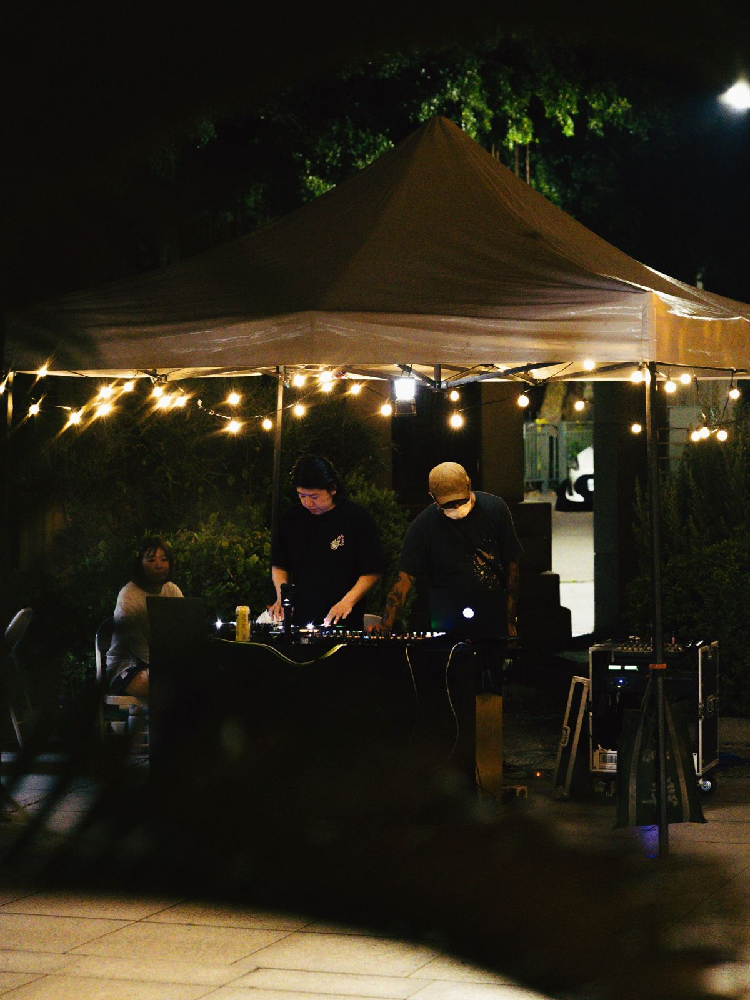
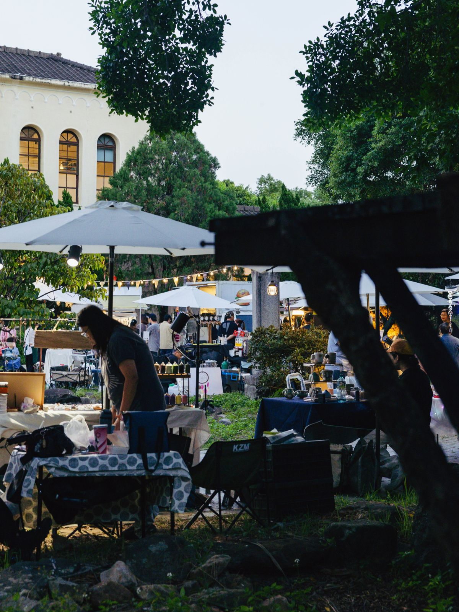
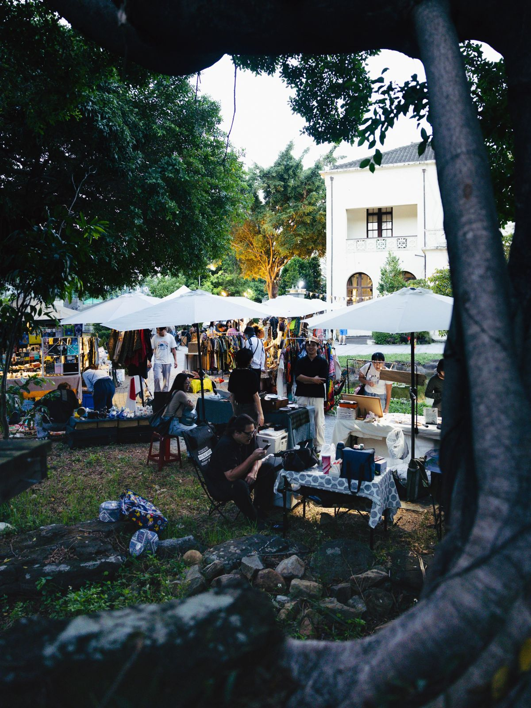
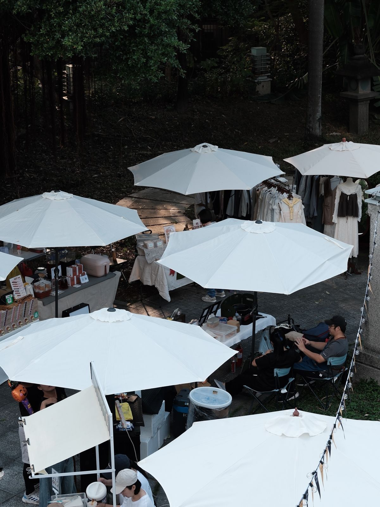
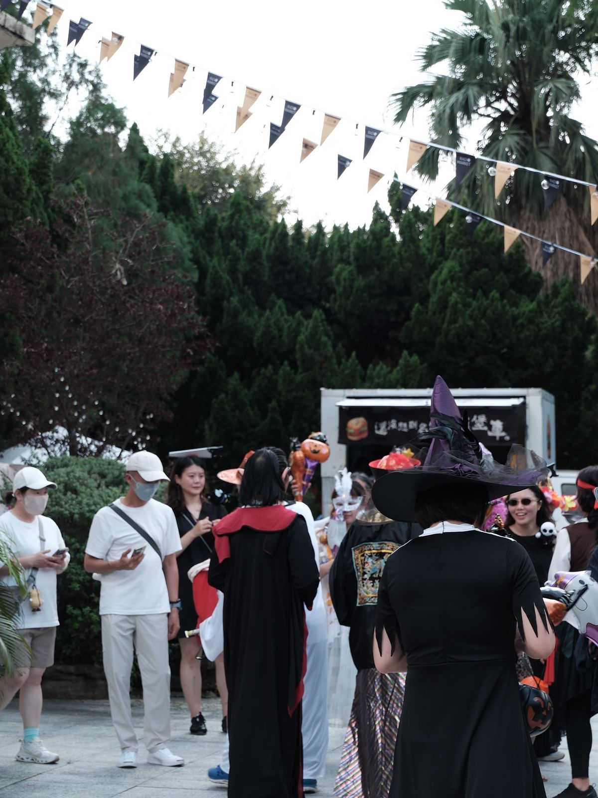
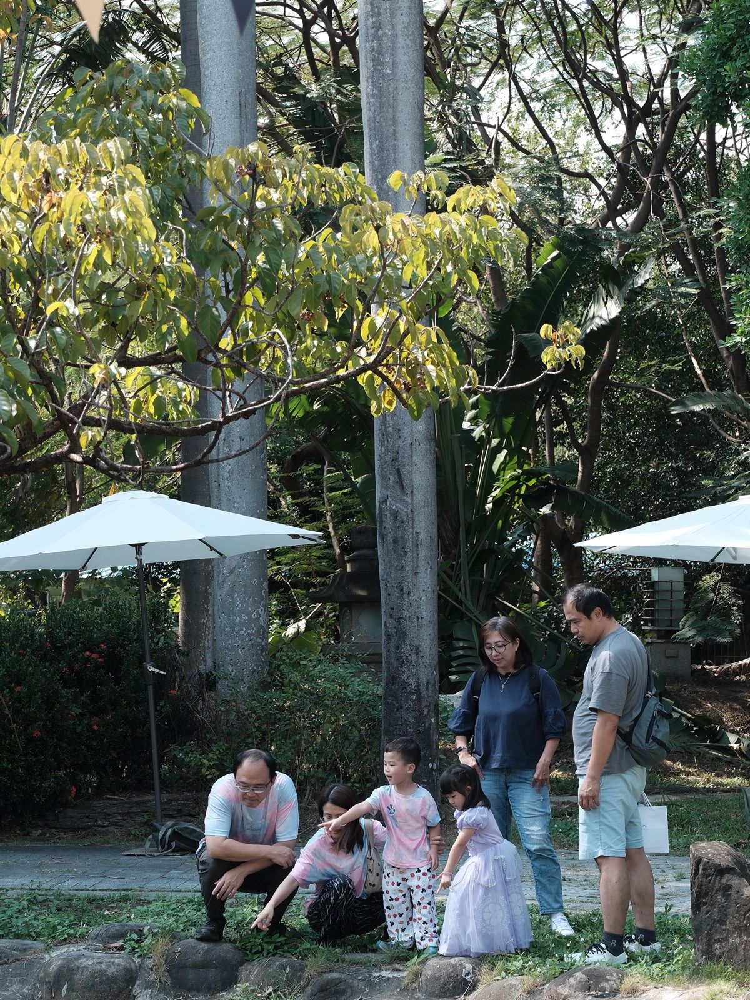
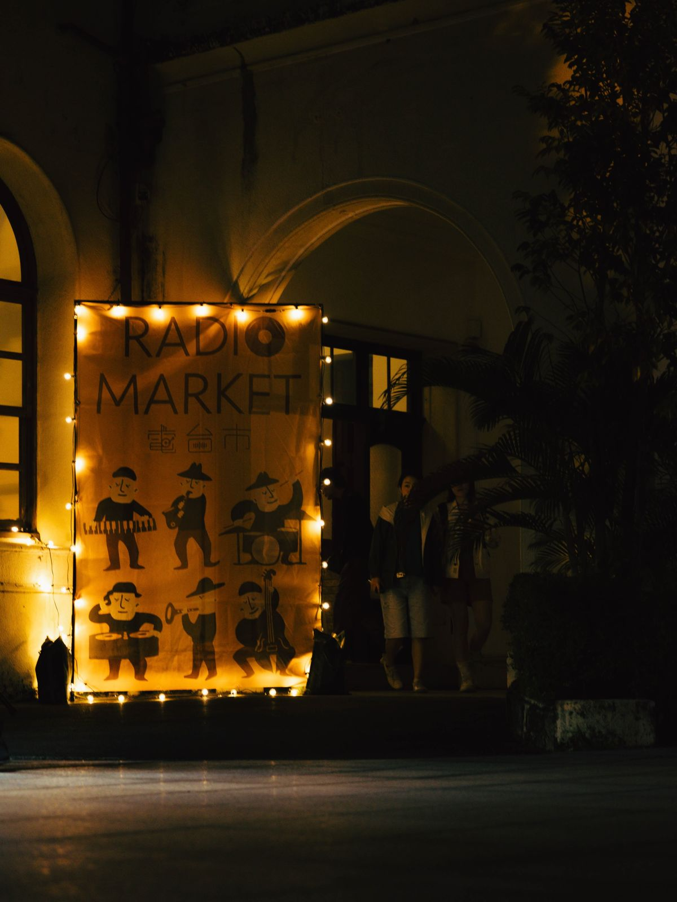
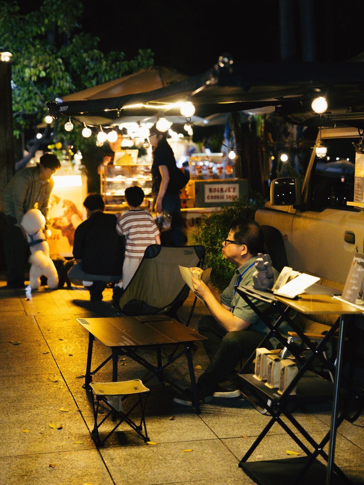

2026.10.31 六 – 11.01 日 · 市集
Radio Market 電台市｜市集音樂派對
11 月第一個週末，搭配上微涼的天氣、適合的音樂、剛好的人們。這兩天聚集了許多人，在臺中放送局裡走逛市集、聽著音樂、享受午後陽光，也讓這座充滿歷史記憶的建築，多了幾分熱鬧與生活氣息。從風格選物、特色美食，到爵士與電子音樂，不同的元素在這裡交會；週日還有戰鬥陀螺賽事同場加映。
主辦：銷播快公司｜協辦：臺中放送局
看更多現場照片 ↗